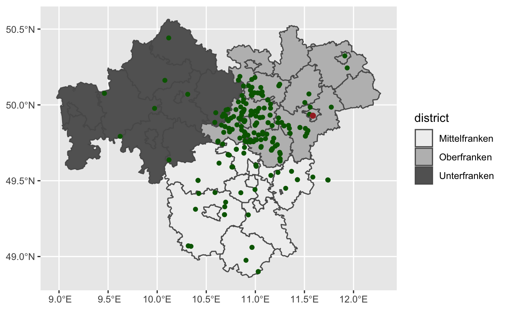
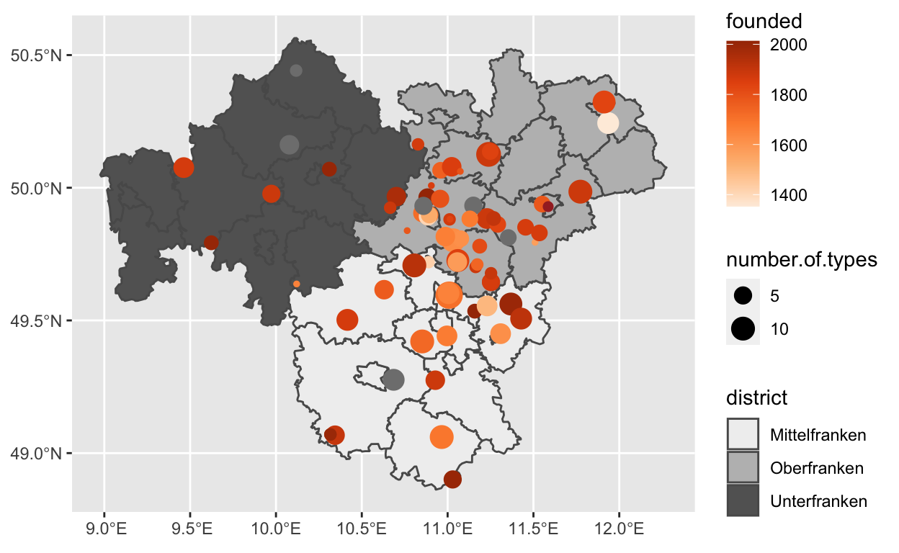
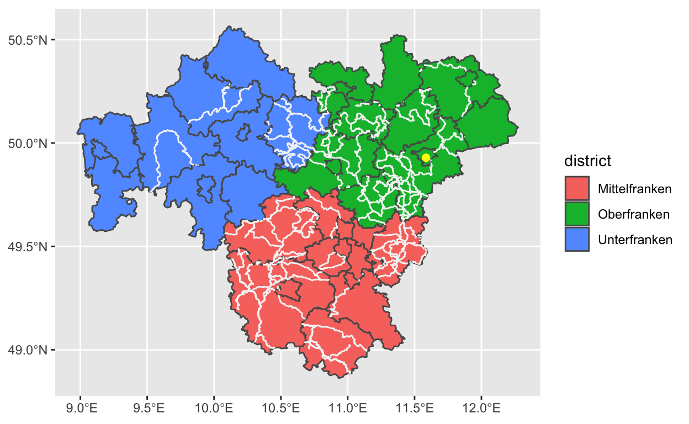
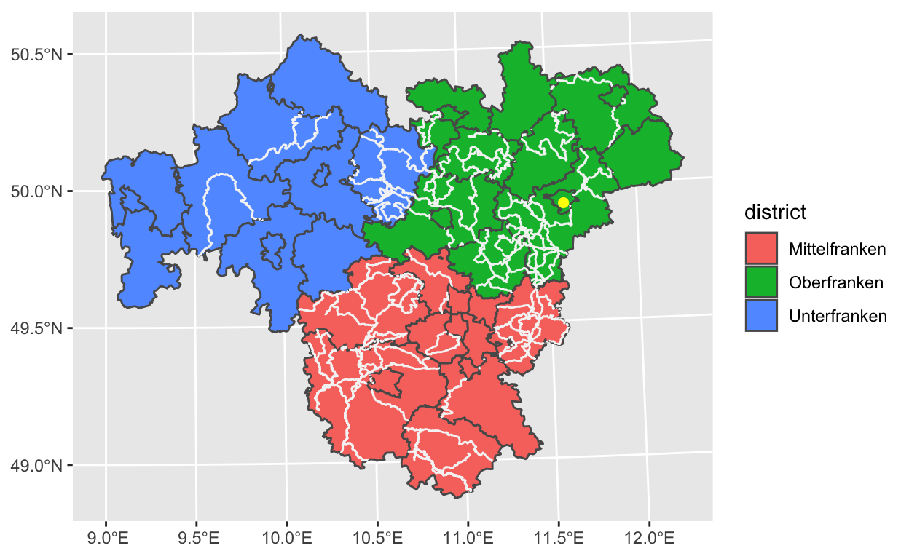

In this tutorial, you will learn some basic steps to start working with (geo)-spatial data in R. I prepared this tutorial as a intuitive “hands on” introduction, but I provide links for those interested in more background and theory.
We will cover how to:
sfggplotI’ve preloaded the packages for this tutorial with
library(sf)
library(units)
require(mapview)
require(RColorBrewer)Throughout this tutorial we will be using the pipe operator, %>%. You can use the pipe to rewrite multiple operations in a way that you can read left-to-right, top-to-bottom. We’ll use piping frequently because it considerably improves the readability of code. The pipe is a defining feature of the tidyverse, so we will load this set of packages as well.
library(tidyverse)The tidyverse package also includes ggplot2, which allow us to create static maps in a similar modular fashion, but using the + operator instead of the pipe.
We will use the franconia, breweries and trails data sets from package mapview. These data sets are documented in help(package=mapview).
sfFor this tutorial we want to explore the surroundings of the University of Bayreuth, my alma mater.
I created a simple feature object using the functions we learned in the previous tutorial:
UBT <- st_sf(data.frame(full_name='Universität Bayreuth',
url='https://uni-bayreuth.de/'),
crs=st_crs("EPSG:4326"),
geometry=st_sfc(
st_point(c(11.585833, 49.928889))))There is not much we can do with one point, so we will look at a couple of data sets from this region, known as “Franken” in german or “Franconia” in other languages.
The best way to start our tour is to explore one of its main attractions: the breweries or Brauereien.
If you want to have an overview of a sf object in R, just type its name, click on the run button to show data and attributes of this object:
breweriesThis is basically the same structure we have seen before, but with more points and several variables.
If you get a warning about and old-style crs object, you can simply update this with:
st_crs(breweries) <- "EPSG:4326"We can use the function st_drop_geometry to look at the data without the spatial component:
breweries %>% st_drop_geometry()st_geometry to look at the spatial component without the data:
breweries %>% st_geometry()There are many ways to explore data in spatial objects. We might be interested in non-spatial information, for example, how many types of beers are there in each brewery?
breweries %>% pull(number.of.types) %>% hist(main="Nr. of types of beers")But how do we know where are the breweries with the most types of beers?
Here we will select one variable from our object and use the default plot function for sf objects:
breweries %>% select(number.of.types) %>% plot(pch=19)So, where would you go to have the largest selection of beers?
You can imagine this is a question that was frequently asked in academic circles of the University. So let’s find the answer!
First we will need to define what is the desired number of beers we expect. We can do this by filtering our spatial object based on a variable:
selected_breweries <- breweries %>% filter(number.of.types>9)Then we want to know which one of these is nearest to our point of reference (UBT point):
qry <- st_nearest_feature(UBT,selected_breweries)Now we can check the details for this record in the spatial object:
selected_breweries %>% slice(qry)Finally we want to know the distance from the uni:
st_distance(UBT,selected_breweries %>% slice(qry))Try running these lines of code, and see if you can answer the questions below:
selected_breweries <- breweries %>% filter(number.of.types>9)
qry <- st_nearest_feature(UBT,selected_breweries)
selected_breweries %>% slice(qry)
st_distance(UBT,selected_breweries %>% slice(qry))We learned how to plot and query spatial and non-spatial information from a sf object, well done!
We will come back to the questions of plotting and querying spatial objects when we have a look at other types of spatial objects. Please continue to the next section.
sfSo we know the basics of a simple feature object with points, and we have seen some simple ways to interact with this object. We will now learn that this structure will be very similar for other kind of geometries and this makes working with multiple objects very straightforward.
Let’s check one object that is already in one of the loaded data sets, it contains the boundaries of the municipalities of Franconia.
We will update the crs information to avoid warnings about an old-style crs object:
st_crs(franconia) <- "EPSG:4326"Check the information of this object, what is different from previous examples? what is similar?:
franconiaAll sf objects have some common structure, regardless of how complex the spatial information is. The interesting feature here is that the geometry is composed of several polygons that can be associated with a single record in the data frame. Many spatial objects are nested, and thus multiple elements (points, lines, polygons) can share the same attributes. The multi-type of geometries allow to handle this kind of data in the same way as we would handle single points, lines or polygons.
We have seen before that we can query both the geometry and the non spatial data of sf objects.
Let’s plot the geometry without any attributes:
franconia %>% st_geometry() %>% plotOr plot ALL attributes. (This can be kind of annoying for very large and complex objects…)
franconia %>% plot# franconia %>% ____(district) %>% ____franconia %>% select(district) %>% plotWe can go one step further and dissolve the boundaries of adjacent municipalities of the same district, this will give us a new spatial object with three features:
franconia %>% group_by(district) %>% summarise(new_geom=st_union(geometry)) %>% plotNotice how we can use spatial functions like st_union with other functions like group_by and summarise.
If all our data is in the same projection (sharing the same or similar crs) we can perform spatial queries, for example, we want to extract the intersection of the location of the University of Bayreuth (in object UBT) with the Franconia municipalities (in object franconia)
st_intersection(UBT,franconia)The result is a point geometry with all variables from the UBT and the franconia data sets.
Simple feature object have their own plot functions, but I find it easier to combine different spatial objects with the ggplot2 functions.
In ggplot, each layer of plot elements is handled by a geom_ function, for sf object the function is called geom_sf.
We can combine the geom_sf calls with other ggplot functions to modify colors, etc.
ggplot() +
geom_sf(data = franconia, aes(fill=district)) +
geom_sf(data = breweries, col="darkgreen") +
geom_sf(data = UBT, cex=2, col="brown") +
scale_fill_brewer(palette = "Greys")
Better yet, in ggplot we can use variables in different aesthetic elements of the plot, for example, colour or size:
ggplot() +
geom_sf(data = franconia, aes(fill=district)) +
geom_sf(data = breweries, aes(size=number.of.types, colour=founded)) +
geom_sf(data = UBT, cex=2, col="brown") +
scale_fill_brewer(palette = "Greys") +
scale_colour_gradientn(colours = brewer.pal(5,"Oranges"))## Warning: Removed 150 rows containing missing values (geom_sf).
We just learned to work with polygons, how to use spatial functions st_union, st_intersection and how to plot spatial objects with ggplot, well done!
In the next section we will work with objects in different projections.
sfThis data set has a selection of hiking trails in Franconia, the geometry here is a multistring, which are collections of lines. Notice that in this case we are using a different EPSG code, it refers to a specific zone of the Universal Transverse Mercator projection for this region of the world.
trailsAgain, if you see a warning about old-style crs, then reassign the same crs.
st_crs(trails) <- "EPSG:32632"| The Universal Transverse Mercator (UTM) is a map projection system for assigning coordinates to locations on the surface of the Earth. The UTM system divides the Earth into 60 zones, each 6° of longitude in width, and uses a projection that can map a region of large north-south extent with low distortion. |
We are often interested in the spatial dimensions of object, for example in this case we want to know the length of each trail, we use the function st_length:
trails %>% st_length() %>% hist(main="Length of trails")Often you want to add information to your spatial object, so that you can use that information latter in your map or in other analysis, here we will use the function mutate to add the length as a variable of the trails object, and then find the longest trail for a hiking excursion.
trails %>% mutate(length=st_length(geometry)) -> trails
trails %>% slice(which.max(length))We can also filter by a desired length and create objects for short and long trails:
trails %>% mutate(length=st_length(geometry)) %>% filter(length>set_units(3000,'m'),length<set_units(3400,'m')) -> short_trails
trails %>% mutate(length=st_length(geometry)) %>% filter(length>set_units(40000,'m')) -> long_trailsWhen plotting object, geom_sf will handle the projections automatically, in this case the trails object is projected to geographical coordinates (some people would call this “inverse projection”). Notice the graticule of geographical coordinates in the background is rectilinear (straight lines in the background)?
ggplot() +
geom_sf(data = franconia, aes(fill=district)) +
geom_sf(data = UBT, cex=2, col="yellow") +
geom_sf(data = long_trails, col="whitesmoke")
If we want to have all our data in the UTM projection, we could invert the order in which we call the objects:
ggplot() +
geom_sf(data=long_trails, col="whitesmoke") +
geom_sf(data = franconia , aes(fill=district)) +
geom_sf(data=UBT , cex=2, col="yellow")How does this look? Do you notice the graticule behind our object has changed?
Unfortunately the lines are overlaid with polygons and we can not see them. So this is NOT the best way to do this.
If we want to have all our data projected on the fly, we can add a call to coord_sf and specify our choice of crs:
ggplot() +
geom_sf(data = franconia, aes(fill=district)) +
geom_sf(data = UBT, cex=2, col="yellow") +
geom_sf(data = long_trails, col="whitesmoke") +
coord_sf(crs=st_crs(long_trails))However, if we want to work with the projected data more than once, we can save time by doing the transformation once and then using the projected objects instead of the originals.
Let’s try a projection, just hit the run button to see what this means:
(UBT_utm = UBT %>% st_transform(st_crs(trails)))Can you do the same with the franconia dataset?
# franconia_utm = ____ %>% ____(____)franconia_utm = franconia %>% st_transform(st_crs(trails))Check how this look like
ggplot() +
geom_sf(data = franconia_utm, aes(fill=district)) +
geom_sf(data = UBT_utm, cex=2, col="yellow") +
geom_sf(data =long_trails, col="whitesmoke")
In this last section we learned to work with lines, how to use spatial functions st_length and how to handle projections of spatial objects with ggplotand with the functionst_transform`. Great!
I hope this has been useful and you feel more confident to start working with geo-spatial data in R.
Check the next tutorials in our geospatial-data repository